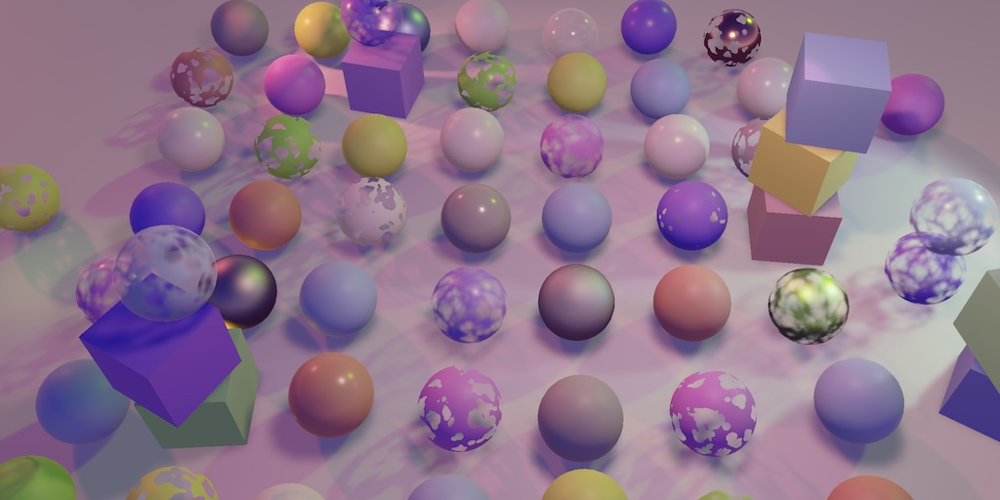
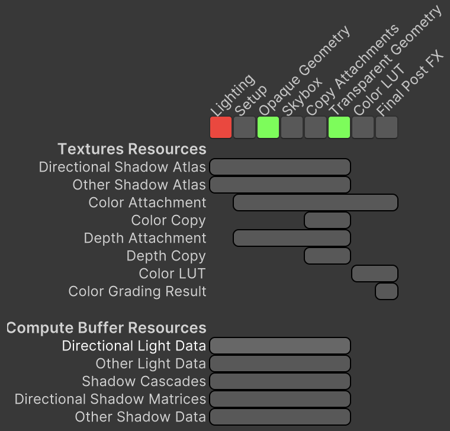

Custom SRP 2.5.0
Structured Buffers

This tutorial is made with Unity 2022.3.22f1 and follows Custom SRP 2.4.0.
Other Light Data
This time we modernize our RP by changing how we send the light and shadow data to the GPU. We used to do this via multiple arrays stored in constant buffers. We're going to replace those with structured buffers.
Structured buffers allow us to work with arrays with structs as elements, cutting down on the total amount of arrays that we need to manage, making the code simpler and easier to maintain. It also enables support for a potentially enormous amount of lights, but we'll leave that for the future and keep the current limits in place.
A downside of using structured buffers is reduced platform support. For example, WebGL doesn't support it so our RP will no longer support building for web. This isn't a big loss though, as it was never good for web to begin with. WebGPU should be fine, but that's currently still in development.
Also, structures buffers can be slower than constant buffers on some hardware in some cases, but we prioritize simplicity and clarity over raw performance. It is possible to use compute buffers as constant buffers to offset this, but the implementation is iffy. For example WebGL still won't work even if this constant-buffer approach is used.
The first data that we convert to use structured buffers is the data for other light types: point and spot lights.
Note that I have expanded the usage of dir in fields and variables to the full directional.
Struct
We're going to create a struct type to bundle all data needed for other lights. To keep the LightingPass class small let's put this struct in a separate file. As we're not using namespaces at this point we'll nest it inside LightingPass. To still place it in a separate file the class has to become partial.
public partial class LightingPass
I created a Passes / Lighting folder and put a new LightingPass.cs script there. The LightingPass struct must have an explicit sequential memory layout as we must send it to the GPU exactly as we define it, disallowing the compiler to reorganize things. Use it to bundle the separate Vector4 light values: color, position, direction and mask, spot angle, and shadow data. Also include a public constant stride with the struct's size in bytes.
using System.Runtime.InteropServices;
using UnityEngine;
using UnityEngine.Rendering;
partial class LightingPass
{
[StructLayout(LayoutKind.Sequential)]
struct OtherLightData
{
public const int stride = 4 * 4 * 5;
public Vector4 color, position, directionAndMask, spotAngle, shadowData;
}
}
We could rearrange, break up, and even omit some of the unused data channels, but for best compatibility we should stick to four-component vectors. Also, we're not going to change anything to our lighting code besides how the data is send to the GPU.
For points lights this data is all set up in LightingPass.SetupPointLight. Let's copy that method into LightingPass, turning it into a static CreatePointLight method, and adapting it to return a configured OtherLightData value.
public static OtherLightData CreatePointLight(
ref VisibleLight visibleLight, Light light, Vector4 shadowData)
{
OtherLightData data;
data.color = visibleLight.finalColor;
data.position = visibleLight.localToWorldMatrix.GetColumn(3);
data.position.w = 1f / Mathf.Max(
visibleLight.range * visibleLight.range, 0.00001f);
data.spotAngle = new Vector4(0f, 1f);
data.directionAndMask = Vector4.zero;
data.directionAndMask.w =
light.renderingLayerMask.ReinterpretAsFloat();
data.shadowData = shadowData;
return data;
}
Duplicate the method, rename it to CreateSpotLight, and change it to match LightingPass.SetupSpotLight.
public static OtherLightData CreateSpotLight(
ref VisibleLight visibleLight, Light light, Vector4 shadowData)
{
OtherLightData data;
data.color = visibleLight.finalColor;
data.position = visibleLight.localToWorldMatrix.GetColumn(3);
data.position.w = 1f / Mathf.Max(
visibleLight.range * visibleLight.range, 0.00001f);
//data.spotAngle = new Vector4(0f, 1f);
data.directionAndMask =
-visibleLight.localToWorldMatrix.GetColumn(2);
data.directionAndMask.w =
light.renderingLayerMask.ReinterpretAsFloat();
float innerCos = Mathf.Cos(
Mathf.Deg2Rad * 0.5f * light.innerSpotAngle);
float outerCos = Mathf.Cos(
Mathf.Deg2Rad * 0.5f * visibleLight.spotAngle);
float angleRangeInv = 1f / Mathf.Max(innerCos - outerCos, 0.001f);
data.spotAngle = new Vector4(
angleRangeInv, -outerCos * angleRangeInv
);
data.shadowData = shadowData;
return data;
}
Now switch to LightingPass and replace the five array fields used for other light data with a single OtherLightData array.
static readonly OtherLightData[] otherLightData = new OtherLightData[maxOtherLightCount];//static readonly Vector4[]//otherLightColors = new Vector4[maxOtherLightCount],//otherLightPositions = new Vector4[maxOtherLightCount],//otherLightDirectionsAndMasks = new Vector4[maxOtherLightCount],//otherLightSpotAngles = new Vector4[maxOtherLightCount],//otherLightShadowData = new Vector4[maxOtherLightCount];
Then change SetupLights so it sets the other light data for point and spot lights using the static methods that we created for that purpose.
case LightType.Point:
if (otherLightCount < maxOtherLightCount)
{
newIndex = otherLightCount;
otherLightData[otherLightCount++] =
OtherLightData.CreatePointLight(
ref visibleLight, light,
shadows.ReserveOtherShadows(light, i));
}
break;
case LightType.Spot:
if (otherLightCount < maxOtherLightCount)
{
newIndex = otherLightCount;
otherLightData[otherLightCount++] =
OtherLightData.CreateSpotLight(
ref visibleLight, light,
shadows.ReserveOtherShadows(light, i));
}
break;
Now we can remove the old SetupPointLight and SetupSpotLight methods.
//void SetupPointLight(…) { … }//void SetupSpotLight(…) { … }
Compute Buffer
We'll be sending the other light data to the GPU using a compute buffer, instead of filling five portions of a constant buffer. So add an ID for _OtherLightData and remove the five old ones.
static readonly int
otherLightCountId = Shader.PropertyToID("_OtherLightCount"),
otherLightDataId = Shader.PropertyToID("_OtherLightData");
//otherLightColorsId = Shader.PropertyToID("_OtherLightColors"),
//otherLightPositionsId = Shader.PropertyToID("_OtherLightPositions"),
//otherLightDirectionsAndMasksId =
//Shader.PropertyToID("_OtherLightDirectionsAndMasks"),
//otherLightSpotAnglesId = Shader.PropertyToID("_OtherLightSpotAngles"),
//otherLightShadowDataId = Shader.PropertyToID("_OtherLightShadowData");
We'll let the render graph manage the compute buffer for us. This means that, just like with textures, we're going get handle for it, in this case a ComputeBufferHandle. Add a field for it.
ComputeBufferHandle otherLightDataBuffer;
In Record, invoke CreateComputeBuffer on the render graph to reserve our buffer, then pass it through the builder's WriteComputeBuffer to register it for writing. We have to provide a ComputeBufferDesc, for which we need to set a name, element count, and stride size. We can also set a type, but the default is a structured buffer, which is what we need. To keep things simple we always pick the maximum for the count.
pass.otherLightDataBuffer = builder.WriteComputeBuffer(
renderGraph.CreateComputeBuffer(new ComputeBufferDesc
{
name = "Other Light Data",
count = maxOtherLightCount,
stride = OtherLightData.stride
}));
builder.SetRenderFunc<LightingPass>(
static (pass, context) => pass.Render(context));
To upload the data to the GPU we have to invoke SetBufferData on the command buffer in Render. We pass it five arguments: the buffer handle, the array containing the data, two zeros for their start indices, and how many elements to copy. Note that we only have to copy the useful data to the GPU, we're not forced to copy the entire array.
We also have to correctly bind our buffer, by invoking SetGlobalBuffer on the command buffer, just like setting a global texture.
We simply do this always, as setting zero data takes no effort anyway. Then delete the old code that conditionally copied the arrays.
buffer.SetGlobalInt(otherLightCountId, otherLightCount); buffer.SetBufferData( otherLightDataBuffer, otherLightData, 0, 0, otherLightCount); buffer.SetGlobalBuffer(otherLightDataId, otherLightDataBuffer);//if (otherLightCount > 0)//{//buffer.SetGlobalVectorArray(otherLightColorsId, otherLightColors);//buffer.SetGlobalVectorArray(//otherLightPositionsId, otherLightPositions);//buffer.SetGlobalVectorArray(//otherLightDirectionsAndMasksId, otherLightDirectionsAndMasks);//buffer.SetGlobalVectorArray(//otherLightSpotAnglesId, otherLightSpotAngles);//buffer.SetGlobalVectorArray(//otherLightShadowDataId, otherLightShadowData);//}
Shader
We have to adjust the Lit shader so that it can access the other light data again. The only thing that changes for the shader itself is its target level, which increases to 4.5 due to the reliance on structured buffers. It isn't strictly necessary to explicitly increase the target as Unity does this implicitly, but we do it to be clear.
#pragma target 4.5
The shader code that needs to change is in Light.hlsl. Remove the other light arrays from the _CustomLight constant buffer. Underneath it declare an OtherLightData struct that exactly matches the format of the C# version and then declare the structured buffer, as StructuredBuffer<OtherLightData> _OtherLightData.
Note that we're no longer working with a fixed-size buffer at this point and we can delete the definition of MAX_OTHER_LIGHT_COUNT.
#define MAX_DIRECTIONAL_LIGHT_COUNT 4//#define MAX_OTHER_LIGHT_COUNT 64CBUFFER_START(_CustomLight) … int _OtherLightCount;//float4 _OtherLightColors[MAX_OTHER_LIGHT_COUNT];//float4 _OtherLightPositions[MAX_OTHER_LIGHT_COUNT];//float4 _OtherLightDirectionsAndMasks[MAX_OTHER_LIGHT_COUNT];//float4 _OtherLightSpotAngles[MAX_OTHER_LIGHT_COUNT];//float4 _OtherLightShadowData[MAX_OTHER_LIGHT_COUNT];CBUFFER_END struct OtherLightData { float4 color, position, directionAndMask, spotAngle, shadowData; }; StructuredBuffer<OtherLightData> _OtherLightData;
Next, we have to fix GetOtherShadowData because it accesses the removed array containing shadow data. We do that by replacing its light index parameter with the vector containg the light's shadow data itself.
OtherShadowData GetOtherShadowData (float4 lightShadowData) {
OtherShadowData data;
data.strength = lightShadowData.x;
data.tileIndex = lightShadowData.y;
data.shadowMaskChannel = lightShadowData.w;
data.isPoint = lightShadowData.z == 1.0;
…
}
Finally, we fix GetOtherLight by having it first retrieve the other light data and using it in place of all the old array lookups, also passing the shadow data to GetOtherShadowData.
Light GetOtherLight(int index, Surface surfaceWS, ShadowData shadowData)
{
OtherLightData data = _OtherLightData[index];
Light light;
light.color = data.color.rgb;
float3 position = data.position.xyz;
float3 ray = position - surfaceWS.position;
light.direction = normalize(ray);
float distanceSqr = max(dot(ray, ray), 0.00001);
float rangeAttenuation = Square(
saturate(1.0 - Square(distanceSqr * data.position.w)));
//float4 spotAngles = _OtherLightSpotAngles[index];
float3 spotDirection = data.directionAndMask.xyz;
light.renderingLayerMask = asuint(data.directionAndMask.w);
float spotAttenuation = Square(
saturate(dot(spotDirection, light.direction) *
data.spotAngle.x + data.spotAngle.y));
OtherShadowData otherShadowData = GetOtherShadowData(data.shadowData);
…
}
Directional Light Data
We're going to give directional lights the same treatment. This might seem overkill, but our RP is fairly unique in that it supports multiple shadowed directional lights. If there's only support for a single directional light you'd just put its data in a constant buffer.
Struct
Create a DirectionalLightData struct type, just like OtherLightData but for directional lights. So it only has a color, direction and mask, and shadow data. There is only one type of directional light, so give it a constructor method that is based on LightingPass.SetupDirectionalLight.
using System.Runtime.InteropServices;
using UnityEngine;
using UnityEngine.Rendering;
partial class LightingPass
{
[StructLayout(LayoutKind.Sequential)]
struct DirectionalLightData
{
public const int stride = 4 * 4 * 3;
public Vector4 color, directionAndMask, shadowData;
public DirectionalLightData(
ref VisibleLight visibleLight, Light light, Vector4 shadowData)
{
color = visibleLight.finalColor;
directionAndMask = -visibleLight.localToWorldMatrix.GetColumn(2);
directionAndMask.w = light.renderingLayerMask.ReinterpretAsFloat();
this.shadowData = shadowData;
}
}
}
Add an array of this type to LightingPass.
static readonly DirectionalLightData[] directionalLightData = new DirectionalLightData[maxDirectionalLightCount]; static readonly OtherLightData[] otherLightData = new OtherLightData[maxOtherLightCount];
Remove the three old separate arrays that it replaces.
//static readonly Vector4[]//dirLightColors = new Vector4[maxDirLightCount],//dirLightDirectionsAndMasks = new Vector4[maxDirLightCount],//dirLightShadowData = new Vector4[maxDirLightCount];
Change SetupLights so it sets the directional light data by constructing a new DirectionalLightData value.
case LightType.Directional:
if (directionalLightCount < maxDirectionalLightCount)
{
directionalLightData[directionalLightCount++] =
new DirectionalLightData(
ref visibleLight, light,
shadows.ReserveDirectionalShadows(
light, i));
}
break;
And remove the old SetupDirectionalLight method.
//void SetupDirectionalLight(…) { … }
Compute Buffer
Again we introduce a new ID, in this case _DirectionalLightData, and remove the old ones that will no longer be used.
static readonly int
dirLightCountId = Shader.PropertyToID("_DirectionalLightCount"),
directionalLightDataId = Shader.PropertyToID("_DirectionalLightData"),
//dirLightColorsId = Shader.PropertyToID("_DirectionalLightColors"),
//dirLightDirectionsAndMasksId =
//Shader.PropertyToID("_DirectionalLightDirectionsAndMasks"),
//dirLightShadowDataId =
//Shader.PropertyToID("_DirectionalLightShadowData");
//static readonly int
otherLightCountId = Shader.PropertyToID("_OtherLightCount"),
otherLightDataId = Shader.PropertyToID("_OtherLightData");
Include a handle for the compute buffer used for directional lights.
ComputeBufferHandle directionalLightDataBuffer, otherLightDataBuffer;
Register it for writing in Record.
pass.directionalLightDataBuffer = builder.WriteComputeBuffer(
renderGraph.CreateComputeBuffer(new ComputeBufferDesc
{
name = "Directional Light Data",
count = maxDirectionalLightCount,
stride = DirectionalLightData.stride
}));
pass.otherLightDataBuffer = builder.WriteComputeBuffer(
renderGraph.CreateComputeBuffer(new ComputeBufferDesc
{
name = "Other Light Data",
count = maxOtherLightCount,
stride = OtherLightData.stride
}));
And fill and set it in Render, replacing the old conditional setting of the three arrays.
buffer.SetGlobalInt(dirLightCountId, dirLightCount); buffer.SetBufferData( directionalLightDataBuffer, directionalLightData, 0, 0, directionalLightCount); buffer.SetGlobalBuffer( directionalLightDataId, directionalLightDataBuffer);//if (dirLightCount > 0)//{//buffer.SetGlobalVectorArray(dirLightColorsId, dirLightColors);//buffer.SetGlobalVectorArray(//dirLightDirectionsAndMasksId, dirLightDirectionsAndMasks);//buffer.SetGlobalVectorArray(//dirLightShadowDataId, dirLightShadowData);//}
Shader
In Light.hlsl, remove the remaining arrays from _CustomLight, define DirectionalLightData, and declare the _DirectionalLightData structured buffer. Also remove MAX_DIRECTIONAL_LIGHT_COUNT.
//#define MAX_DIRECTIONAL_LIGHT_COUNT 4CBUFFER_START(_CustomLight) int _DirectionalLightCount;//float4 _DirectionalLightColors[MAX_DIRECTIONAL_LIGHT_COUNT];//float4 _DirectionalLightDirectionsAndMasks[MAX_DIRECTIONAL_LIGHT_COUNT];//float4 _DirectionalLightShadowData[MAX_DIRECTIONAL_LIGHT_COUNT];int _OtherLightCount; CBUFFER_END struct DirectionalLightData { float4 color, directionAndMask, shadowData; }; StructuredBuffer<DirectionalLightData> _DirectionalLightData;
GetDirectionalShadowData needs to be fixed just like GetOtherShadowData, the only difference being that this method also has a ShadowData parameter.
DirectionalShadowData GetDirectionalShadowData(
float4 lightShadowData,
ShadowData shadowData)
{
DirectionalShadowData data;
data.strength = lightShadowData.x;
data.tileIndex = lightShadowData.y + shadowData.cascadeIndex;
data.normalBias = lightShadowData.z;
data.shadowMaskChannel = lightShadowData.w;
return data;
}
The last step is to fix GetDirectionalLight the same way as we fixed GetOtherLight.
Light GetDirectionalLight(int index, Surface surfaceWS, ShadowData shadowData)
{
DirectionalLightData data = _DirectionalLightData[index];
Light light;
light.color = data.color.rgb;
light.direction = data.directionAndMask.xyz;
light.renderingLayerMask = asuint(data.directionAndMask.w);
DirectionalShadowData directionalShadowData = GetDirectionalShadowData(
data.shadowData, shadowData);
light.attenuation = GetDirectionalShadowAttenuation(
directionalShadowData, shadowData, surfaceWS);
return light;
}
Other Shadows
With the light data finished we move on to shadow data, beginning with the other shadows.
Struct
First turn Shadows into a partial class.
public partial class Shadows
Then create an OtherShadowData struct containing a vector for tile data and a shadow matrix. Give it a constructor method based on Shadows.SetOtherTileData. That method relies on some fields of Shadow, for which we introduce extra parameters.
using System.Runtime.InteropServices;
using UnityEngine;
partial class Shadows
{
[StructLayout(LayoutKind.Sequential)]
struct OtherShadowData
{
public const int stride = 4 * 4 + 4 * 16;
public Vector4 tileData;
public Matrix4x4 shadowMatrix;
public OtherShadowData(
Vector2 offset,
float scale,
float bias,
float border,
Matrix4x4 matrix)
{
tileData.x = offset.x * scale + border;
tileData.y = offset.y * scale + border;
tileData.z = scale - border - border;
tileData.w = bias;
shadowMatrix = matrix;
}
}
}
Replace the two separate arrays for tile data and matrices in Shadows with a single new one using the struct.
static readonly Vector4[] cascadeCullingSpheres = new Vector4[maxCascades], cascadeData = new Vector4[maxCascades];//otherShadowTiles = new Vector4[maxShadowedOtherLightCount];static readonly Matrix4x4[] directionalShadowMatrices = new Matrix4x4[maxShadowedDirLightCount * maxCascades];//otherShadowMatrices = new Matrix4x4[maxShadowedOtherLightCount];static readonly OtherShadowData[] otherShadowData = new OtherShadowData[maxShadowedOtherLightCount];
Set the other shadow data using the new approach, both in RenderSpotShadows and in RenderPointShadows.
void RenderSpotShadows(int index, int split, int tileSize)
{
…
//SetOtherTileData(index, offset, tileScale, bias);
//otherShadowMatrices[index] = ConvertToAtlasMatrix(
//projectionMatrix * viewMatrix, offset, tileScale);
otherShadowData[index] = new OtherShadowData(
offset, tileScale, bias, atlasSizes.w * 0.5f,
ConvertToAtlasMatrix(
projectionMatrix * viewMatrix, offset, tileScale));
…
}
void RenderPointShadows(int index, int split, int tileSize)
{
…
for (int i = 0; i < 6; i++)
{
…
//SetOtherTileData(tileIndex, offset, tileScale, bias);
//otherShadowMatrices[tileIndex] = ConvertToAtlasMatrix(
//projectionMatrix * viewMatrix, offset, tileScale);
otherShadowData[tileIndex] = new OtherShadowData(
offset, tileScale, bias, atlasSizes.w * 0.5f,
ConvertToAtlasMatrix(
projectionMatrix * viewMatrix, offset, tileScale));
…
}
}
Then delete SetOtherTileData.
//void SetOtherTileData(…) { … }
Compute Buffer
Introduce an _OtherShadowData ID to replace the two old array IDs.
static readonly int
…
otherShadowAtlasId = Shader.PropertyToID("_OtherShadowAtlas"),
otherShadowDataId = Shader.PropertyToID("_OtherShadowData"),
//otherShadowMatricesId = Shader.PropertyToID("_OtherShadowMatrices"),
//otherShadowTilesId = Shader.PropertyToID("_OtherShadowTiles"),
cascadeCountId = Shader.PropertyToID("_CascadeCount"),
…;
Add a handle for a compute buffer used for other shadow data.
TextureHandle directionalAtlas, otherAtlas; ComputeBufferHandle otherShadowDataBuffer;
Register it in GetRenderTextures.
otherAtlas = shadowedOtherLightCount > 0 ?
builder.WriteTexture(renderGraph.CreateTexture(desc)) :
renderGraph.defaultResources.defaultShadowTexture;
otherShadowDataBuffer = builder.WriteComputeBuffer(
renderGraph.CreateComputeBuffer(new ComputeBufferDesc
{
name = "Other Shadow Data",
stride = OtherShadowData.stride,
count = maxShadowedOtherLightCount
}));
And fill and set it in RenderOtherShadows, replacing the setting of the old arrays.
//buffer.SetGlobalMatrixArray(otherShadowMatricesId, otherShadowMatrices);//buffer.SetGlobalVectorArray(otherShadowTilesId, otherShadowTiles);buffer.SetBufferData( otherShadowDataBuffer, otherShadowData, 0, 0, shadowedOtherLightCount); buffer.SetGlobalBuffer(otherShadowDataId, otherShadowDataBuffer);
Shader
In Shadows.hlsl, remove the two arrays from _CustomShadows, define the struct type, and declare the _OtherShadowData structured buffer. Note that we already have an OtherShadowData type here. So let's name the new struct OtherShadowBufferData instead. The shader and C# struct names don't need to match, only the data layout matters.
#define MAX_SHADOWED_DIRECTIONAL_LIGHT_COUNT 4//#define MAX_SHADOWED_OTHER_LIGHT_COUNT 16#define MAX_CASCADE_COUNT 4 … CBUFFER_START(_CustomShadows) int _CascadeCount; float4 _CascadeCullingSpheres[MAX_CASCADE_COUNT]; float4 _CascadeData[MAX_CASCADE_COUNT]; float4x4 _DirectionalShadowMatrices [MAX_SHADOWED_DIRECTIONAL_LIGHT_COUNT * MAX_CASCADE_COUNT];//float4x4 _OtherShadowMatrices[MAX_SHADOWED_OTHER_LIGHT_COUNT];//float4 _OtherShadowTiles[MAX_SHADOWED_OTHER_LIGHT_COUNT];float4 _ShadowAtlasSize; float4 _ShadowDistanceFade; CBUFFER_END struct OtherShadowBufferData { float4 tileData; float4x4 shadowMatrix; }; StructuredBuffer<OtherShadowBufferData> _OtherShadowData;
Finally, fix GetOtherShadow by retrieving the other shadow data and use that instead of accessing the separate arrays.
float GetOtherShadow(
OtherShadowData other,
ShadowData global,
Surface surfaceWS)
{
…
//float4 tileData = _OtherShadowTiles[tileIndex];
OtherShadowBufferData data = _OtherShadowData[tileIndex];
float3 surfaceToLight = other.lightPositionWS - surfaceWS.position;
float distanceToLightPlane = dot(surfaceToLight, lightPlane);
float3 normalBias =
surfaceWS.interpolatedNormal * (distanceToLightPlane * data.tileData.w);
float4 positionSTS = mul(
data.shadowMatrix,
float4(surfaceWS.position + normalBias, 1.0));
return FilterOtherShadow(
positionSTS.xyz / positionSTS.w, data.tileData.xyz);
}
Directional Shadows
The directional shadow data is the last that we convert. This works a bit different because we're dealing with shadow cascades and a separate list of shadow matrices.
Struct
Create a DirectionalShadowCascade struct to contain the culling sphere and data vectors for a shadow cascade. Give it a constructor method that mimics Shadows.SetCascadeData.
using System.Runtime.InteropServices;
using UnityEngine;
partial class Shadows
{
[StructLayout(LayoutKind.Sequential)]
struct DirectionalShadowCascade
{
public const int stride = 4 * 4 * 2;
public Vector4 cullingSphere, data;
public DirectionalShadowCascade(
Vector4 cullingSphere,
float tileSize,
ShadowSettings.FilterMode filterMode)
{
float texelSize = 2f * cullingSphere.w / tileSize;
float filterSize = texelSize * ((float)filterMode + 1f);
cullingSphere.w -= filterSize;
cullingSphere.w *= cullingSphere.w;
this.cullingSphere = cullingSphere;
data = new Vector4(1f / cullingSphere.w, filterSize * 1.4142136f);
}
}
}
Replace those vector arrays in Shadows with a new array using the struct. We leave the array for directional shadow matrices as it is.
//static readonly Vector4[]//cascadeCullingSpheres = new Vector4[maxCascades],//cascadeData = new Vector4[maxCascades];static readonly DirectionalShadowCascade[] directionalShadowCascades = new DirectionalShadowCascade[maxCascades]; static readonly Matrix4x4[] directionalShadowMatrices = new Matrix4x4[maxShadowedDirLightCount * maxCascades];
Adjust RenderDirectionalShadows to set the cascade data the new way.
if (index == 0)
{
//SetCascadeData(i, splitData.cullingSphere, tileSize);
directionalShadowCascades[i] = new DirectionalShadowCascade(
splitData.cullingSphere,
tileSize, settings.directional.filter);
}
And delete the old SetCascadeData method.
//void SetCascadeData(…) { … }
Compute Buffer
Introduce a _DirectionalShadowCascades ID to replace the old ones for the cascade data.
static readonly int
directionalShadowAtlasId =
Shader.PropertyToID("_DirectionalShadowAtlas"),
directionalShadowCascadesId =
Shader.PropertyToID("_DirectionalShadowCascades"),
directionalShadowMatricesId =
Shader.PropertyToID("_DirectionalShadowMatrices"),
…,
//cascadeCullingSpheresId = Shader.PropertyToID("_CascadeCullingSpheres"),
//cascadeDataId = Shader.PropertyToID("_CascadeData"),
…;
Then add compute buffer handles for the directional shadow cascades and matrices.
ComputeBufferHandle directionalShadowCascadesBuffer, directionalShadowMatricesBuffer, otherShadowDataBuffer;
Register these buffers in GetRenderTextures. I gave the cascade buffer a shorter name otherwise it would be cut off in the render graph viewer, which looks bad.
directionalAtlas = shadowedDirLightCount > 0 ?
builder.WriteTexture(renderGraph.CreateTexture(desc)) :
renderGraph.defaultResources.defaultShadowTexture;
directionalShadowCascadesBuffer = builder.WriteComputeBuffer(
renderGraph.CreateComputeBuffer(new ComputeBufferDesc
{
name = "Shadow Cascades",
stride = DirectionalShadowCascade.stride,
count = maxCascades
}));
directionalShadowMatricesBuffer = builder.WriteComputeBuffer(
renderGraph.CreateComputeBuffer(new ComputeBufferDesc
{
name = "Directional Shadow Matrices",
stride = 4 * 16,
count = maxShadowedDirLightCount * maxCascades
}));
Finally, fill and set the buffers in RenderDirectionalShadows, replacing the old setting of arrays. We copy the matrices straight to the compute buffer.
//buffer.SetGlobalVectorArray(//cascadeCullingSpheresId, cascadeCullingSpheres);//buffer.SetGlobalVectorArray(cascadeDataId, cascadeData);//buffer.SetGlobalMatrixArray(dirShadowMatricesId, dirShadowMatrices);buffer.SetBufferData( directionalShadowCascadesBuffer, directionalShadowCascades, 0, 0, settings.directional.cascadeCount); buffer.SetGlobalBuffer( directionalShadowCascadesId, directionalShadowCascadesBuffer); buffer.SetBufferData( directionalShadowMatricesBuffer, directionalShadowMatrices, 0, 0, shadowedDirLightCount * settings.directional.cascadeCount); buffer.SetGlobalBuffer( directionalShadowMatricesId, directionalShadowMatricesBuffer);
Shader
In Shadows.hlsl, remove the old arrays and max definitions, define a DirectionalShadowCascade struct, and define the _DirectionalShadowCascades buffer. Also define the _DirectionalShadowMatrices buffer, using float4x4 as its element type.
//#define MAX_SHADOWED_DIRECTIONAL_LIGHT_COUNT 4//#define MAX_CASCADE_COUNT 4… CBUFFER_START(_CustomShadows) int _CascadeCount;//float4 _CascadeCullingSpheres[MAX_CASCADE_COUNT];//float4 _CascadeData[MAX_CASCADE_COUNT];//float4x4 _DirectionalShadowMatrices//[MAX_SHADOWED_DIRECTIONAL_LIGHT_COUNT * MAX_CASCADE_COUNT];float4 _ShadowAtlasSize; float4 _ShadowDistanceFade; CBUFFER_END struct DirectionalShadowCascade { float4 cullingSphere, data; }; StructuredBuffer<DirectionalShadowCascade> _DirectionalShadowCascades; StructuredBuffer<float4x4> _DirectionalShadowMatrices;
Adjust GetShadowData so it works with the new cascade buffer.
ShadowData GetShadowData(Surface surfaceWS)
{
…
for (i = 0; i < _CascadeCount; i++)
{
//float4 sphere = _CascadeCullingSpheres[i];
DirectionalShadowCascade cascade = _DirectionalShadowCascades[i];
float distanceSqr = DistanceSquared(
surfaceWS.position, cascade.cullingSphere.xyz);
if (distanceSqr < cascade.cullingSphere.w)
{
float fade = FadedShadowStrength(
distanceSqr, cascade.data.x, _ShadowDistanceFade.z);
…
}
}
…
}
And adjust GetCascadedShadow likewise.
float GetCascadedShadow(
DirectionalShadowData directional,
ShadowData global,
Surface surfaceWS)
{
float3 normalBias = surfaceWS.interpolatedNormal * (
directional.normalBias *
_DirectionalShadowCascades[global.cascadeIndex].data.y);
…
if (global.cascadeBlend < 1.0)
{
normalBias = surfaceWS.interpolatedNormal * (
directional.normalBias *
_DirectionalShadowCascades[global.cascadeIndex + 1].data.y);
…
}
return shadow;
}
_DirectionalShadowMatrices is still accessed the same way, so that requires no code change.
Tracking Resource Usage
We wrap up by correctly tracking the usage of our compute buffers. We do this the same way we track render texture usage.
Shadow Resources
Refactor rename ShadowTextures to ShadowResources. Then add fields for the three shadow compute buffer handles to it.
public readonly ref struct ShadowResources
{
public readonly TextureHandle directionalAtlas, otherAtlas;
public readonly ComputeBufferHandle
directionalShadowCascadesBuffer,
directionalShadowMatricesBuffer,
otherShadowDataBuffer;
public ShadowResources(
TextureHandle directionalAtlas,
TextureHandle otherAtlas,
ComputeBufferHandle directionalShadowCascadesBuffer,
ComputeBufferHandle directionalShadowMatricesBuffer,
ComputeBufferHandle otherShadowDataBuffer)
{
this.directionalAtlas = directionalAtlas;
this.otherAtlas = otherAtlas;
this.directionalShadowCascadesBuffer = directionalShadowCascadesBuffer;
this.directionalShadowMatricesBuffer = directionalShadowMatricesBuffer;
this.otherShadowDataBuffer = otherShadowDataBuffer;
}
}
Refactor rename Shadows.GetRenderTextures to GetResources and include the compute buffer handles when returning the shadow resources.
public ShadowResources GetResources(
RenderGraph renderGraph,
RenderGraphBuilder builder)
{
…
return new ShadowResources(
directionalAtlas,
otherAtlas,
directionalShadowCascadesBuffer,
directionalShadowMatricesBuffer,
otherShadowDataBuffer);
}
Light Resources
As LightingPass now also has its own resources let's introduce a new LightResources ref struct type. It contains the two handles for lighting and wraps the shadow resources.
using UnityEngine.Experimental.Rendering.RenderGraphModule;
public readonly ref struct LightResources
{
public readonly ComputeBufferHandle
directionalLightDataBuffer, otherLightDataBuffer;
public readonly ShadowResources shadowResources;
public LightResources(
ComputeBufferHandle directionalLightDataBuffer,
ComputeBufferHandle otherLightDataBuffer,
ShadowResources shadowResources)
{
this.directionalLightDataBuffer = directionalLightDataBuffer;
this.otherLightDataBuffer = otherLightDataBuffer;
this.shadowResources = shadowResources;
}
}
Change LightingPass.Record so it returns the new resource type.
public static LightResources Record(…)
{
…
return new LightResources(
pass.directionalLightDataBuffer,
pass.otherLightDataBuffer,
pass.shadows.GetResources(renderGraph, builder));
}
And adjust CameraRenderer.Render to pass it along.
LightResources lightResources = LightingPass.Record(…); … GeometryPass.Record(…, lightResources); … GeometryPass.Record(…, lightResources);
Finally, make GeometryPass.Record indicate that it reads all resources.
public static void Record(
…
in LightResources lightData)
{
…
builder.ReadComputeBuffer(lightData.directionalLightDataBuffer);
builder.ReadComputeBuffer(lightData.otherLightDataBuffer);
builder.ReadTexture(lightData.shadowResources.directionalAtlas);
builder.ReadTexture(lightData.shadowResources.otherAtlas);
builder.ReadComputeBuffer(
lightData.shadowResources.directionalShadowCascadesBuffer);
builder.ReadComputeBuffer(
lightData.shadowResources.directionalShadowMatricesBuffer);
builder.ReadComputeBuffer(
lightData.shadowResources.otherShadowDataBuffer);
builder.SetRenderFunc<GeometryPass>(
static (pass, context) => pass.Render(context));
}
Now the render graph viewer also shows the usage and lifetime of our buffers. Make sure that its filter is set to include compute buffers.

The next tutorial is Custom SRP 3.0.0.